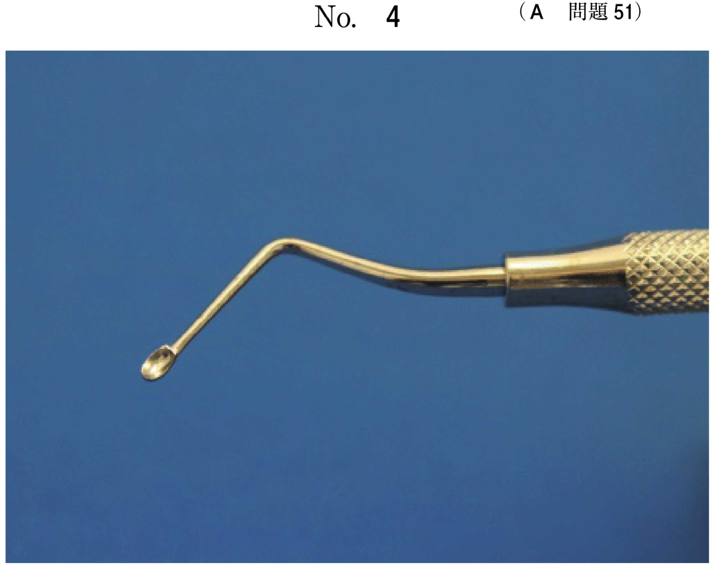
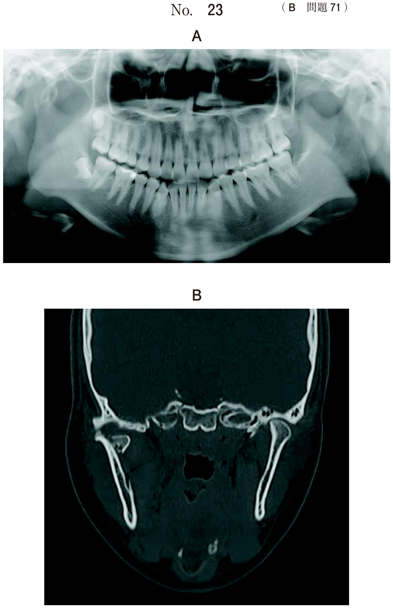

喉頭展開・気管挿管操作時には様々な合併症が起こりうる。
| 合併症 | 原因 | 症状 |
|---|---|---|
| 反回神経麻痺 | 声帯の圧迫・損傷 | 嗄声 |
| 披裂軟骨脱臼 | 乱暴な操作 | 嗄声、嚥下障害 |
| 喉頭粘膜損傷 | カフの過膨張、太いチューブ | 声門下浮腫 |
| 歯の損傷 | 喉頭展開時のブレード | 歯牙脱臼・破折 |
麻酔導入における喉頭展開時の写真（別冊No.8）を別に示す。全身麻酔後に矢印の部分の運動が障害され、嗄声が認められた。
本症例の診断として最も適切なのはどれか。1つ選べ。

【解説】矢印は声帯を指している。気管挿管により声帯が圧迫・損傷され、反回神経麻痺を生じた。反回神経は声帯の運動を支配しており、麻痺すると嗄声が出現する。
| 合併症 | 機序 | 症状 |
|---|---|---|
| 迷走神経反射 | 咽頭・喉頭刺激 | 徐脈、低血圧、不整脈 |
| 交感神経刺激 | 侵害刺激 | 頻脈、血圧上昇 |
| 喉頭痙攣 | 浅麻酔時の操作 | 吸気性喘鳴、低酸素 |
57歳の男性。全身麻酔下に右側の下顎骨嚢胞摘出術を行うこととした。麻酔導入後、気管挿管のために喉頭蓋を持ち上げた時点で心電図の変化を認めた。心電図と脈波の波形（別冊No.31）を別に示す。
心電図異常の原因として考えられるのはどれか。1つ選べ。

【解説】心電図でRR間隔が延長（徐脈）している。喉頭蓋を持ち上げた際の咽頭刺激により迷走神経反射が生じ、徐脈を引き起こした。眼球心臓反射は眼球圧迫時、頸動脈洞反射は頸動脈洞刺激時に起こる。
| 合併症 | 特徴 | 対処 |
|---|---|---|
| 食道挿管 | 低酸素血症 → 心停止の危険 | ETCO2で確認、再挿管 |
| 片肺挿管 | 換気不均等、SpO2低下 | 聴診で確認、チューブ引き戻し |